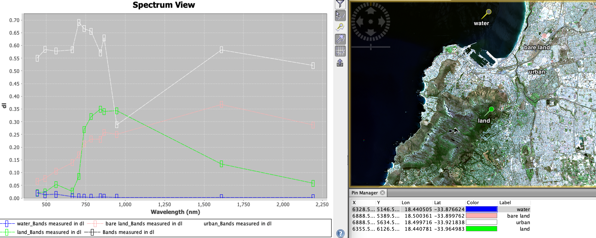
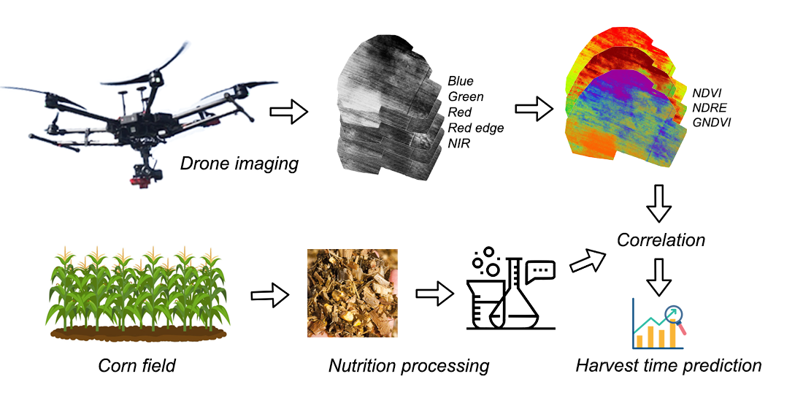
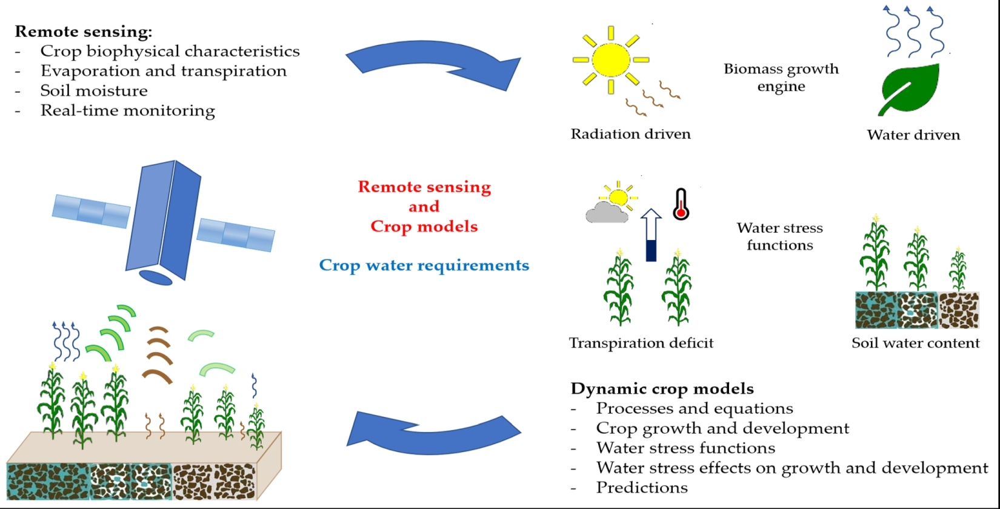

1 WEEK1
1.1 Key Points
1.1.1 What is Remote Sensing
Sensors and remote sensing platforms
Sensors are devices that collect and record information about electromagnetic radiation capabilities and are mounted on remote sensing platforms. Sensors are classified according to how they work and into active and passive sensors. Remote sensing platforms are mainly divided into, ground, air and space based remote sensing platforms.
Electromagentic waves
Electromagnetic waves can be classified into different bands according to the order of their wavelength or frequency in a vacuum. The following diagram shows the electromagnetic spectrum commonly used in remote sensing.

The magnitude of energy that an object reflects or emits across a range of wavelengths is called its spectral response pattern/spectral signatures. It can be used to identify objects.
Resolution
In remote sensing we refer to three types of resolution: spatial, spectral and temporal. Spatial Resolution refers to the size of the smallest feature that can be detected by a satellite sensor or displayed in a satellite image. It is usually presented as a single value representing the length of one side of a square. Remote Sensing » Spatial Analysis
1.1.2 RS data download
We can use:
Copernicus Open Accesss Hub to download RS images collected by Sentinel Series Satellite.
For Sentinel Series Satellite Overview
PS. Very few of the links for additional information are in Chinese, as this makes it easier for me to understand.
Note when selecting products, be careful about：
- Satellite transit period range (e.g. 2020/01/01 - 2020/03/07)
- Data type (Sentinel1/2/3) Where Sentinel2 data can be downloaded in types S1C (unatmospherically corrected) and S2A (atmospherically corrected).
- Cloud cover to extent [0 TO 5]
We can also use:
Landsat data to download RS image from Landsat Series.
1.1.3 Basic information of the image
Copernicus Open Accesss Hub
GRANULE > sensor number > IMG_DATA > R10
Then you can see the information about the bands.Including its resolution, central wavelength and description about which wave band it belongs to ( Blue/Green/Ted/VNIR/…)
And here is a website which provides basic information from the characteristics of satellite to its products. For example ,this is for Landsat 5 (TM)
1.1.4 Understanding RS image through software
QGIS
To process Sentinel data with QGIS, we can install Semi-Automatic Classification Plugin (SCP) version 7.
We can open monochrome images in different bands. We can also open the TCI image, which is a True Colour Image of B02 (Blue), B03 (Green), and B04 (Red) Bands.But the TCI has a range of pixel values from 0-255, it is not visually clear. We can get a more realistic level of colour by using BOA data.
In the Sentinel 2 images available for download, you will find Level 1C data and Level 2A data. 1C data are orthorectified and geometrically refined atmospheric apparent reflectance products that are not atmospherically corrected. 2A images are orthorectified bottom-of-atmosphere (BOA) reflectance corrected images. What does this mean? Unlike Class 1C, Class 2A images correspond to atmospherically corrected images and provide reflectance data that are closer to the real thing (and therefore have a more realistic colour level). It is possible to distinguish between them visually (below), as a Class 2A image is sharper, has higher brightness and contrast, and does not show the whitish texture produced by atmospheric influences.
In addition, using the merge tool to merge single-band images can also obtain multi-band images. Then realize True Color Image by selecting the red, green and blue bands.
SNAP
SNAP is an application developed by the European Space Agency for processing Sentinel satellite data. We actually can open .zip file in SNAP which is very convenient. And if unzip the file and open each .tiff file separately, some important information will lose like the value of wavelength.This video can be help on how to open Sentinel data in SNAP.
Following are some analysis we can do through the software:
- Colour composites
We can achieve different band combinations by selecting different remote sensing image bands in RGB channels
Be careful that different RS data may have different meanings for the band with the same No.
For Sentinel 2 data：
| Types | RGB channels | description |
|---|---|---|
| Natural Color | B4, B3, B2 | display imagery the same way our eyes see the world |
| Color Infrared | B8, B4, B3 | emphasize healthy and unhealthy vegetation. denser vegetation is red,but urban areas are white |
| Agriculture | B11,B8,B2 | used to monitor the health of crops,highlighting dense vegetation that appears as dark green |
| Geology | B12, B11, B2 | for finding geological features. This includes faults, lithology, and geological formations |
For Landsat 5 TM data：
| Types | RGB channels | description |
|---|---|---|
| Natural Color | B3, B2, B1 | display imagery the same way our eyes see the world |
| Standard false color | B4, B3, B2 | emphasize healthy and unhealthy vegetation. denser vegetation is red,but urban areas are white |
| simulated true color | B7,B4,B3 | Identify residential land and water bodies |
| … | … | … |

In addition to band combination, we can also use some band calculations to obtain images that can highlight targets.For example, Vegetation Index (B8-B4)/(B8+B4), Moisture Index (B8A-B11)/(B8A+B11)
- Image statistics
Histogram
A graph that describes the relationship between each gray level in an image and its frequency of occurrence. Histograms for each band of the image can be viewed in SNAP. If we change the mapping range of image pixels in 0-255, the image will be changed visually. We generally omit 1% at the lower end and 4% at the upper end for mapping. In addition, image contrast can be improved by adjusting the histogram morphology.
Mean: reflects the overall brightness of the image
Variance: refers to the variance of the brightness value of each band, reflecting the volume of the information
Scatterplot
The scatterplot is used to analyze the spatial distribution relationship between two bands. For example, draw a scatter diagram of red (vegetation absorbs) and Near-infrared (NIR, that vegetation strongly reflects). Since higher NIR values and lower red values indicate dense vegetation, while lower values of both are usually bare soil. Therefore, the image can roughly analyze the distribution characteristics of different ground objects.

- Masking and resampling
Remote sensing images can be cropped using vector data (Raster > Masks > Land/Sea mask) to leave areas of interest. Note that SNAP can only read ESRI shapefiles. In addition, before cropping, we need to unify the resolution of the band, you can use the resampling tool (Raster > Geometric > Resampling)
- Comparison of spectral signatures
We can extract the spectral signatures of different land cover classes using the Semi-automatic Classification plugin in QGIS 3.16. Here is a tutorial video

Also, it is easy to do it in SNAP. Basically you just need to use Optical->Spectrum View, and make sure that your image has band information. Besides, you can use Pin tool to make sample, and compare the curve of different objects. Here is another tutorial video about Pins and Spectrum Tool in SNAP

1.2 Application
The main application of Remote Sensing Image is about recognizing geographical entities, which is well used in agriculture, forestry, geology, marine, meteorology, hydrology, military, environmental protection and other fields.Here, I will give same simple example of how we use remote sensing image in agriculture scenarios.

Crop remote sensing production estimation is based on the collection of different spectral signatures of various crops in different growth stages according to biological principles, through the surface information recorded by the sensor on the platform, to identify crop types, monitor crop growth, and predict crop yield before crop harvest a range of methods. This technology can dynamically monitor the growth process of crops, measure the planting area, estimate the output per unit area and estimate the total output.
Traditionally, optical and infrared sensors will be used to detect the irrigated areas, for example, Thenkabail et al. (2005) developed a comprehensive algorithm based on timeseries of MODIS spectral bands (2, 3, 5, 6, and 7) data to detect irrigation and rainfed classes along with crop onset, peak, and senescence (aging of the plant).
And for crop yield assessment, using remote sensing of plant photosynthetic activity is a good way as photosynthetic activity influences biomass production. Both passive and active microwave remote sensing can help us to do it. There are some indicators or models like the Vegetation Optical Depth (VOD) (Guan et al. 2016). Besides, regression relationship with indices such as NDVI, RVI, and VCI are used to estimate crop yield.

In addition, remote sensing technology can also be useful when detecting agricultural pests and diseases. Indices such as Disease Water Stress Index (DWSI) , Disease Index (DI) and Yellow Rust Index (YRI) for detecting wheat yellow rust, Aphid Index (AI), and Leafhopper Index (LHI) , among others are proposed for pest and disease detection (Karthikeyan et al. 2020).
1.3 Reflection
For remote sensing image data, the products generated by different sensors are very different, such as the information of bands and the structure of downloaded files. This requires us to have a good understanding of these video products before processing the data, otherwise you don’t even know how to open them in the software.
As for software, these software are not very friendly to novices, such as densely packed menu bars and tools that don’t know where they are. Fortunately, YouTube has many tutorials to help you operate.
The subject of remote sensing involves some physical knowledge, such as spectrum and radiation, which is sometimes a bit difficult to understand. The remote sensing of the visible light part can be interpreted through eyes which is helpful to understand. Others, such as microwave remote sensing, are even more difficult to understand.
However, when I was studying agricultural remote sensing, I felt the power of this technology. When the study area is large, remote sensing is a good choice to monitor dynamic changes. Moreover, it can digitize the characteristics of geographic entities, such as the reflectivity of the electromagnetic spectrum with different wavelengths. This digitization provides opportunities for further data analysis (and the scale of the data is easily consistent, this is great). Therefore, a large number of ML and AI technologies are applied to remote sensing image processing. This brings greater promise to the application of remote sensing.
1.4 Reference
Janoušek, Jiří, et al. “Using UAV-based photogrammetry to obtain correlation between the vegetation indices and chemical analysis of agricultural crops.” Remote Sensing 13.10 (2021): 1878.
Grant, J. P., et al. “Comparison of SMOS and AMSR-E vegetation optical depth to four MODIS-based vegetation indices.” Remote Sensing of Environment 172 (2016): 87-100.
Thenkabail, Prasad S., Mitchell Schull, and Hugh Turral. “Ganges and Indus river basin land use/land cover (LULC) and irrigated area mapping using continuous streams of MODIS data.” Remote Sensing of Environment 95.3 (2005): 317-341.
Karthikeyan, L., Ila Chawla, and Ashok K. Mishra. “A review of remote sensing applications in agriculture for food security: Crop growth and yield, irrigation, and crop losses.” Journal of Hydrology 586 (2020): 124905.
Huang, Jianxi, et al. “Assimilation of remote sensing into crop growth models: Current status and perspectives.” Agricultural and Forest Meteorology 276 (2019): 107609.
Tolomio, Massimo, and Raffaele Casa. “Dynamic crop models and remote sensing irrigation decision support systems: A review of water stress concepts for improved estimation of water requirements.” Remote Sensing 12.23 (2020): 3945.
And some other website may be useful: Learn GIS and Geography